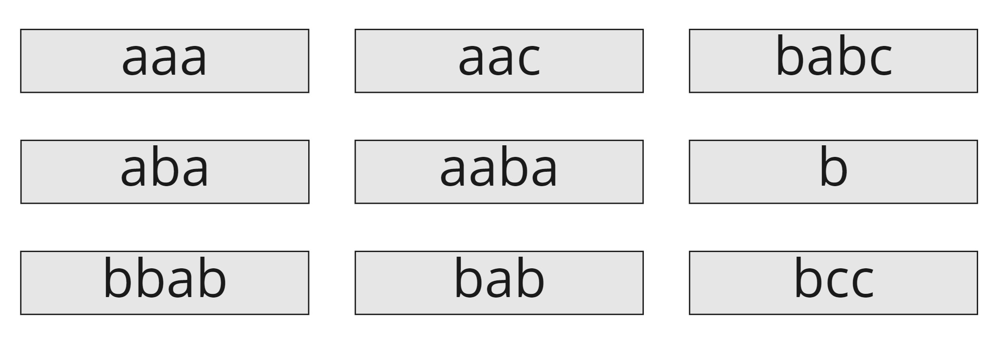

У нас есть несколько строк и мы хотим их как-то хранить
Мы хотим хранить их так, чтобы использовать для этого как можно меньше букв
Первое, что приходит в голову - хранить его в виде списка строк
Но заметим, что некоторые строки могут содержать в себе другие, а это значит, что мы будем несколько раз хранить одинаковые объекты
Например, ПРЕДПРИНИМАТЕЛЬСТВО содержит в себе ПРЕДПРИНИМАТЕЛЬ
И если мы хотим хранить два этих слова, то логично будет хранить их как-то так: ПРЕДПРИНИМАТЕЛЬ#СТВО - 19* букв вместо 34
А если мы хотим также хранить и слово ПРЕДПРИНИМАТЕЛЬНИЦА?
Добавим еще ПРЕДПРИНЯТЬ
Итого 26* символов против 64 в списке строк
У нас получилась древовидная структура
Раз уж так, давайте преобразуем наш список строк в дерево
Заметим, что спуск по дереву строит все префиксы какой-либо строки
Возможно, мы сможем как-то использовать это свойство для подсчета префикс-функции
Полученную структуру можно представить в более компактном виде:
Бор такого вида называется сжатым бором